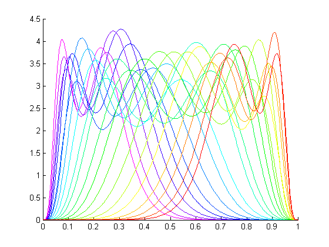
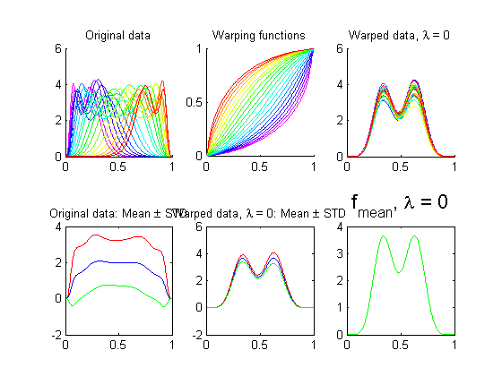
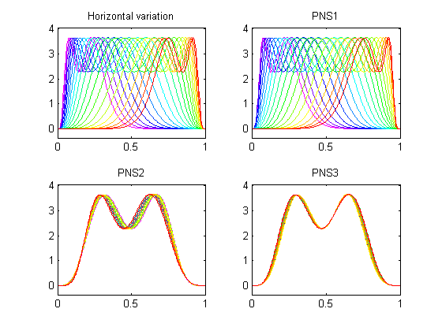

PNS toy example
Example of horizontal analysis using PNS
Contents
1. Set up
To make this example work, please first download J. S. Marron's softwares AllMatlab7Combined.zip on http://www.unc.edu/depts/stat-or/miscellaneous/marron/Matlab7Software/ and unzip it. The softwares we need are 'General' and 'Smoothing'. Then, add 'General','Smoothing' and 'SRVF' to your search path. One way to do it is: Click on 'Set Path' -> 'Add with Subfolders', select 'General', 'Smoothing' and 'SRVF', then all these three and their subfolders will be added to the search path.
2. Make data
d = 300; n = 21; sig = 0.1; m = 1; warpRange = 5; b = 3; randn('seed',0); gamO = zeros(d,n); a = linspace(-warpRange,warpRange,n+1); a = a(a~=0); t = linspace(-b,b,d); m=1; f = zeros(d,n); for i = 1:n; if a(i)~=0; gamO(:,i) = ((2*b)*(exp(a(i)*(t+b)/(2*b))-1)/(exp(a(i))-1)-b); else gamO(:,i) = t; end; end; t = (t+b)/(2*b); gamO = (gamO+b)/(2*b); for i = 1:n; f(:,i) = normrnd(m,sig) * betapdf(gamO(:,i),6,12)+ ... # 6,12 normrnd(m,sig) * betapdf(gamO(:,i),12,6); end; mycolor = hsvcolmapQY(n); % rainbow color clf ; hold on; for i = 1:n plot(t, f(:,i),'color',mycolor(i,:)) end hold off;
3. Fisher-Rao curve registration
[fn,qn,q0,fmean,mqn,gam,psi,stats]=time_warping_oneplot(f,t',mycolor);
lambda = 0.0 Initializing... Computing Karcher mean of 21 functions in SRVF space... updating step: r=1 updating step: r=2
4. PNS on the warping functions
inputstruct = struct( 'gam',gam,... 'meanf',fmean,... 't',t,... 'colmap',mycolor, ... 'plotType',2,... 'npns',3); curvepnsLXS(inputstruct);
Message from PNSmain.m; dataset is on 298-sphere. .. found null space of dimension 278,to be trivially reduced. .. then narrow down to 20-sphere
(c) Qunqun Yu, Xiaosun Lu 2015